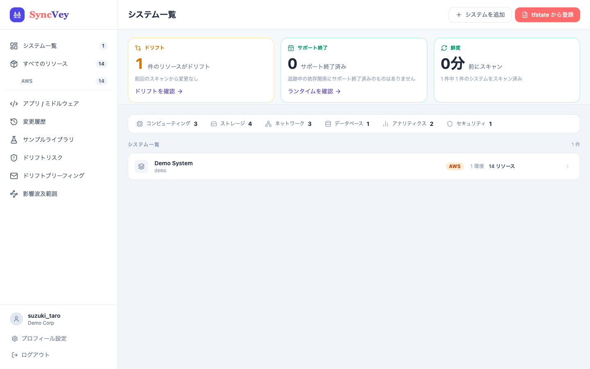
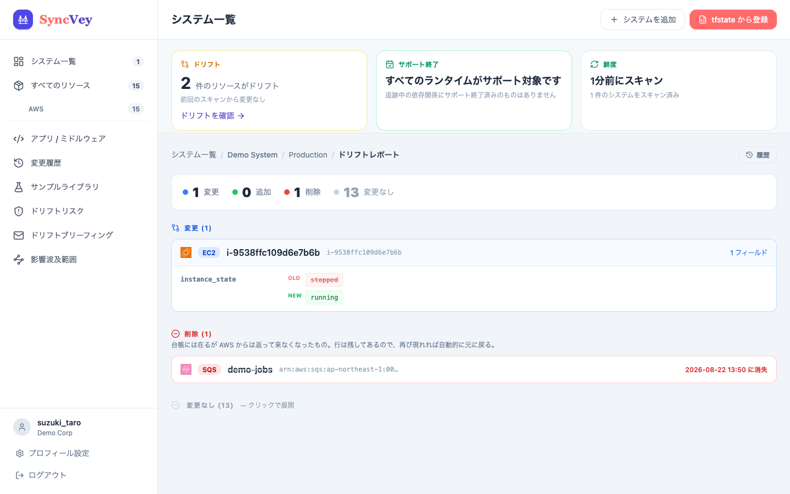
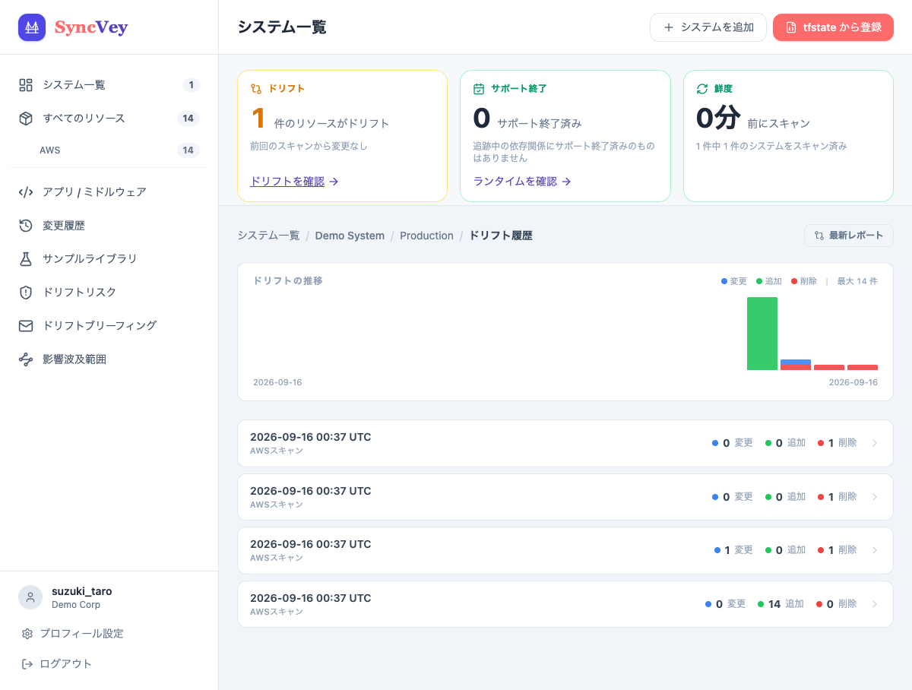

terraform planが見逃す
管理外リソースの検知
実態と定義のズレの
リアルタイム把握
コンソール作成リソースの
完全な台帳化
※ 導入前に国・地域を1問お聞きします。個人情報の入力はありません。
1人でインフラを抱えているエンジニアが、毎日直面していること
コンソールで手作りしたリソースがどこに何個あるか、正確には把握できていない。休めないし、引き継げないし、次の人に渡すこともできない。
terraform plan はTerraformが知らないリソースを見えません。コンソールで手作りしたEC2やRDSは、既存ツールでは原理的に検知できないのが現状です。
Terraform Cloudのドリフト検知は有料プランが必要です。自前でcronを組んでterraform planを定期実行するのは、1人では維持コストが高すぎます。
tfstate（あるべき姿）とAWS実態（現実）のズレを、属性レベルで特定する
Boto3が取得したAWS APIの生レスポンスを、内部でTerraform互換のJSONスキーマに変換してtfstateと突合。リソース属性レベルの差分のみをDriftとして特定し、動的パラメータ（ECSタスク数・RDS自動バックアップ等）はホワイトリストで除外します。



terraform plan はTerraformが把握しているリソースしか見ません。SyncVeyはBoto3でAWS APIを直接叩き、コンソールで手作りされたリソースも漏れなく発見します。
S3バックエンドならBucket/Keyを設定するだけで自動同期。ローカルtfstateはUIからファイルをアップロードするだけ。どちらも台帳が即座に完成します。
定義と実態のズレを属性レベルで特定し、Slackへ即座に通知します。スキャン間隔を設定すれば、気づかないままのドリフトをゼロに近づけます。
スキャン・インポートのたびにドリフトのスナップショットを記録。推移グラフで実行ごとの変化を可視化し、各時点のフィールド単位の差分も保持します。いつ・何がズレ始めたかが一目で分かります。
ドリフトは全部同じ重さではありません。SyncVeyは変更をセキュリティ影響度で採点し、セキュリティグループが 0.0.0.0/0 に開けば critical、タグ変更は低リスクと区別します。さらに「Who changed this?」で、その変更を CloudTrail から実行者まで辿ります。週次の Slack ブリーフィングを有効にすれば、毎週月曜にチャンネルへ届きます。何が・どれだけ危険で・誰に聞けばいいか、まで分かります。
200日ローテーションされていないシークレットは、差分を生みません。2回のスキャンの間で何も変わっていない——それ自体が問題です。SyncVeyは差分ではなく現在の状態を採点します。ローテーション無効・一度も実行されていない・期限超過。読むのはローテーションのメタデータだけで、シークレットの値は取得も保存もしません。
広すぎるReadOnlyAccessは使いません。スキャンに必要な特定リソースの読み取りだけに絞ったカスタムIAMポリシーJSONを同梱しています。
環境ごとにサポート終了（EOL）のランタイム・ミドルウェアを検出。標準では内蔵データでオフライン判定し、任意で日次更新を有効にすれば endoflife.date から最新の終了日を取得します。EOL一覧が塩漬けになることはもうありません。
TOTPによる2段階認証を標準搭載（Google Authenticator / 1Password / Authy など）。外部IDプロバイダは不要で、プロフィール画面からアカウントごとに有効化できます。
インフラの上で何が動いているかも台帳に残す。言語・フレームワーク・デプロイ方式・依存パッケージを環境（PROD / STG / DEV）ごとに管理できます。これはインフラスキャンツールには存在しない、SyncVey独自のレイヤーです。
同梱の iam-policy.json をIAMに適用し、アクセスキーを発行。スキャンに必要な最小権限のみです。
.env.example をコピーして .env を作成し、AWSキーを設定します。
cp .env.example .env
docker compose up -d
migrate・初期アカウント作成・サンプルデータ投入まで自動で完了します。
S3バックエンド： BucketとKeyを設定するだけで自動同期。
s3://my-bucket/envs/prod/terraform.tfstate
ローカル： terraform state pull > infra.tfstate をUIからアップロード。
ダッシュボードから定義と実態の乖離を即座に確認。スキャン間隔を設定すれば自動で更新し続けます。
Terraform管理外リソースの検知は、既存ツールの組み合わせでは埋まらない空白
| ツール | 管理外リソース検知 | Drift検知UI | アプリ/ミドルウェア管理 | 現在の状態 |
|---|---|---|---|---|
| Terraform Cloud Standard | ✗ terraform planベースのみ | ✓ | ✗ | 有料（$20/user/月〜） |
| driftctl | ✓ Boto3ベース | ✗ CLI のみ | ✗ | 開発凍結（2023年〜メンテなし） |
| Steampipe | ✓ SQL で柔軟 | ✗ クエリUIのみ | ✗ | 別途ダッシュボード構築が必要 |
| dragondrop cloud-concierge OSS |
✓ Terraform管理外リソースを検知 | ✓ Cloud Perch | ✗ | OSS（IaC特化・SaaS終了） |
| SyncVey 🔥 | ✓ Boto3で管理外リソースも検知 | ✓ 台帳 + Drift UI込み | ✓ 言語・FW・依存パッケージを環境別に管理 | 無料・OSS（MIT） |
dragondropはIaC品質管理に特化したOSS。SyncVeyはインフラから、その上で動くアプリ・ミドルウェアまで一元管理します。
インフラの機密情報を扱うツールがブラックボックスであってはならない。コードはすべて公開されています。
Terraform Cloud 不要。Docker 1発で動く、完全無料のオープンソース・インフラ台帳。
※ 導入前に国・地域を1問お聞きします。個人情報の入力はありません。